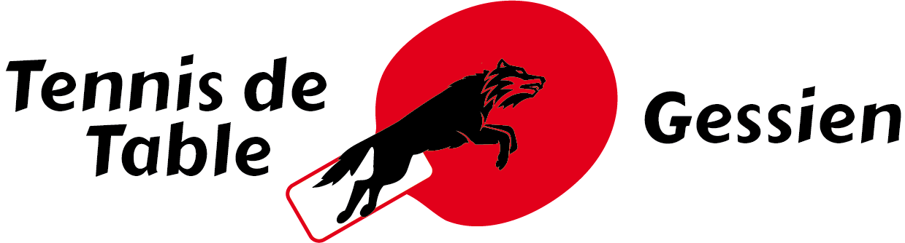

Bonjour, je m'appelle Mathias, je suis en 1re G9 au Lycee International de Ferney Voltaire. Je suis actuellement des cours du tronc commun de l'enseignement generale avec les specialites suivantes :
Je compte abandonner la specialite de NSI, etant donne que j etais que je me trouvais dans l indecision, et qu apres avoir regarde au niveau des ecoles superieures cet enseignement n'étais que très peu reconnu.
Fini de parler des cours, on est en vacance quand meme
J'ai plusieurs passion tel que :
Ma passion pour les jeux m a conduit a m'interesse a la programmation, ce que j'ai pu concretiser grace au cours de NSI, je n exclu donc pas de m'oriente dans le milieu de l'informatique, regardant actuellement pour les ecoles d'ingenieure.
Au niveau des jeux video, celui m'ayant le plus occupe ces derniers temps est FIFA 20, un jeux developpe par electronic arts, et subissant quelaue controverse dut a leur methode incitant a l'achat de monnaie virtuel. J'apprecie ce jeux car il me permet d associe 2 de mes passions, le football et les jeux.
Ci dessous plusieurs liens rapportant au jeux
Je suis aussi passionee de football, ne pratiquant pas mais suivant attentivement les grands championnats europeens, plus particulierement la serie a, la premiere league et la ligue 1
Mais actuellement je suis particulierement la ligue des champions.
Les resultats de la ligue des championsJe ne pratique pas le football mais je pratique un autre sport, le tennis de table. Un sport demandant mobilite, concentration, du mentale, de l explosivite et de la strategie. Cela fais 1 an et demi que je pratique ce sport avec une orientation competitive. On peut retrouver mon classement au lien suivant.
Mon classement Les autres pages :